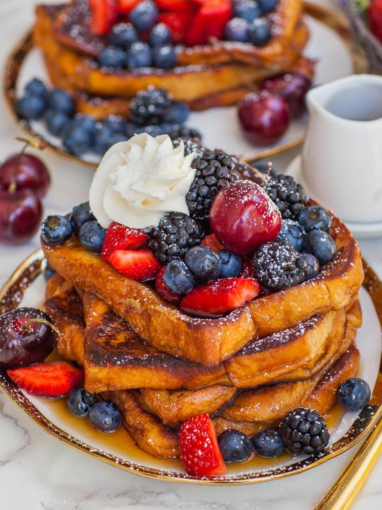

French Toast

Description
French toast, also known as "eggy bread" or "gypsy toast" in some regions, is a classic breakfast dish made from
bread soaked in a mixture of beaten eggs and milk, then fried until golden and crispy on the outside and soft on the
inside. It's often served warm and topped with various toppings such as maple syrup, powdered sugar, fresh fruits,
or whipped cream.
French toast is a versatile dish that can be customized with various toppings and flavorings to suit your taste
preferences. It's a comforting and satisfying breakfast option that's perfect for weekend brunches or special
occasions.
Ingredients
-
Slices of bread (usually thick slices of bread such as brioche, challah, or French bread work best)
- Eggs
- Milk
- Vanilla extract (optional)
- Cinnamon (optional)
- Butter or oil for frying
-
Toppings of your choice (such as maple syrup, powdered sugar, fresh fruits, or whipped cream)
Steps
-
In a shallow bowl or pie dish, whisk together eggs, milk, and any desired flavorings such as vanilla extract and
cinnamon. The ratio of eggs to milk can vary depending on personal preference, but a common ratio is about 1 egg
to 1/4 cup of milk.
-
Heat a skillet or frying pan over medium heat and add a little butter or oil to coat the bottom of the pan.
-
Dip each slice of bread into the egg mixture, allowing it to soak for a few seconds on each side until well coated
but not soggy.
-
Place the soaked bread slices in the preheated skillet and cook for 2-3 minutes on each side, or until golden
brown and crispy.
-
Remove the French toast from the skillet and serve immediately with your choice of toppings.
-
Repeat the process with the remaining slices of bread, adding more butter or oil to the skillet as needed.
-
Enjoy your delicious French toast warm and topped with your favorite toppings!